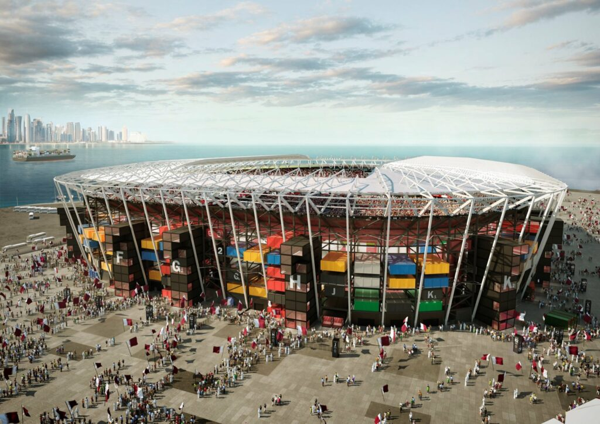

ESTÁDIOS DO CATAR 2022
Estádio Internacional Khalifa

Localizado no centro de todas as sedes do Mundial, foi o primeiro a ser entregue neste calendário Fifa. Inaugurado no ano de 1976 e agora palco dos jogos 2022.
Mesmo reformado, porém, o estádio tem uma arquitetura um pouco menos arrojada, mais puxada para o tradicional. Diferente dos outros palcos da Copa, o Khalifa não tem teto, nem mesmo retrátil, mas conta com sistema de refrigeração para ajudar a amenizar as altas temperaturas, prezando o conforto dos 50 mil torcedores que cabem no estádio.
| Estádio Khalifa | ||
|---|---|---|
| Jogos | Grupos | Data/Hora |
| Inglaterra x Irã | Grupo B | 21/11 - 10h00 |
| Alemanha x Japão | Grupo E | 23/11 - 10h00 |
| Holanda x Equador | Grupo A | 25/11 - 13h00 |
| Croácia x Canadá | Grupo F | 27/11 - 13h00 |
| Equador x Senegal | Grupo A | 29/11 - 12h00 |
| Japão x Espanha | Grupo E | 01/12 - 16h00 |
| Oitavas de final | A1 x B2 | 03/12 - 12h00 |
| Disputa do Terceiro Lugar | Perdedor Semifinal 1 x Perdedor Semifinal 2 | 17/12 - 12h00 |
Estádio Nacional de Lusail

Localizado na cidade homônima, foi um projeto apresentando em dezembro de 2018 pelo falecido arquiteto Albert Speer. A arquitetura do estádio, que tem fachada inspirada nas tigelas de tâmaras da época de ouro do artesanato islâmico, e iluminação feita para lembrar o fanar, uma lanterna local, conta com uma cobertura de painéis de energia solar (que vão alimentar o estádio e seus arredores) e acabamentos em prata, que impactaram muito no alto custo da construção, que ficou no valor de 2 bilhões de dólares.
O estádio, de grama natural e teto retrátil - que pode ser aberto ou fechado a depender do clima e das demandas dos eventos -, tem capacidade para 94.500 torcedores. Nas paredes estão fotos de 80 mil pessoas que participaram das obras e um mosaico, além de uma tecnologia que vai turbinar a experiência dos visitantes, que poderão tirar fotos com hologramas dos jogadores e fazer compras nos shoppings virtuais.
| Estádio Lusail | ||
|---|---|---|
| Jogos | Grupos | Data/Hora |
| Argentina x Arábia Saudita | Grupo C | 22/11 - 07h00 |
| Brasil x Sérvia | Grupo G | 24/11 - 16h00 |
| Argentina x México | Grupo C | 26/11 - 16h00 |
| Portugal x Uruguai | Grupo H | 28/12 - 16h00 |
| Arábia Saudita x México | Grupo C | 30/11 - 16h00 |
| Camarões x Brasil | Grupo G | 02/12 - 16h00 |
| Oitavas de final | H1 x G2 | 06/12 - 16h00 |
| Quartas de final | O1 x O2 | 09/12 - 16h00 |
| Semifinal | Q1 x Q2 | 13/12 - 16h00 |
| Final | S1 x S2 | 18/12 - 12h00 |
Estádio Al Bayt

Um dos estádios que mais representa a tradicionalidade qatari é o Al Bayt, localizado na cidade de Jor. Com capacidade para 60 mil torcedores, foi projetado pelo arquiteto alemão Albert Speer Jr., que se inspirou nas tendas beduínas - uma cabana usada por nômades árabes para para se estabelecer e sobreviver ao deserto -, para desenhar a fachada da arena.
Mas, apesar da aparência simples de uma tenda, o estádio, assim como os outro sete que vão receber jogos da Copa, é extremamente tecnológico. Além disso, possui um hotel em suas instalações, no qual os quartos tem vista direta para o campo, que é feito de grama natural.
| Estádio Al Bayt | ||
|---|---|---|
| Jogos | Grupos | Data/Hora |
| Catar x Equador | Grupo A | 20/11 - 13h00 |
| Marrocos x Croácia | Grupo F | 23/11 - 07h00 |
| Inglaterra x EUA | Grupo B | 25/11 - 16h00 |
| Espanha x Alemanha | Grupo E | 27/11 - 16h00 |
| Holanda x Catar | Grupo A | 29/11 - 12h00 |
| Costa Rica x Alemanha | Grupo E | 01/12 - 16h00 |
| Oitavas de Final | B1 x A2 | 04/12 - 16h00 |
| Quartas de Final | O5 x O6 | 10/12 - 16h00 |
| Semifinal | Q3 x Q4 | 14/12 - 16h00 |
Estádio Al Thumama

Situado em Doha, capital do Qatar, é um dos estádios mais modernos da atualidade. Este é o único dos oito palcos da Copa do Mundo que foi projetado por um arquiteto local, Ibrahim M. Jaidah, que se inspirou no gahfiya, um tradicional gorro de malha usado por homens qataris, para o design exterior da arena.
Durante a Copa do Mundo, o Al Thumama terá capacidade para 40 mil pessoas, mas isso cairá na metade após o Mundial, de forma a atender melhor às necessidades e funcionar como uma infraestrutura esportiva de qualidade para os locais. Ao final da competição, o estádio será também um centro comunitário, que contará com multiplas instalações desportivas.
| Estádio Al Thumama | ||
|---|---|---|
| Jogos | Grupos | Data/Hora |
| Senegal x Holanda | Grupo A | 21/11 - 13h00 |
| Espanha x Costa Rica | Grupo E | 23/11 - 13h00 |
| Catar x Senegal | Grupo A | 25/11 - 10h00 |
| Bélgica x Marrocos | Grupo F | 27/11 - 10h00 |
| Irã x EUA | Grupo B | 29/11 - 16h00 |
| Canadá x México | Grupo F | 01/12 - 12h00 |
| Oitavas de Final | D1 x C2 | 04/12 - 12H00 |
| Quartas de Final | O7 x O8 | 10/12 - 12h00 |
Estádio do Porto de Doha (Estádio 974)

Localizado em Ras Abu Aboud, distrito a 7 km do centro de Doha, o estádio fica às margens do Golfo e faz uma homenagem ao comércio marítimo do Catar. O estádio foi construído com exatos 974 containers e tem capacidade para 44.950 torcedores. Além disso, o número 974 também remete ao código internacional telefônico do País.
De todos os oito estádios do Mundial, este é o que tem o sistema de refrigeração menos complexo. Por ser à beira-mar, a própria brisa natural alivia o calor.
O 974 foi inaugurado em novembro de 2021 e será totalmente desmontado após o Mundial. A preocupação do governo local é não deixar os chamados “elefantes-brancos” como herança da Copa do Mundo. A promessa é que partes do estádio sejam reutilizados em parques populares e cedidos a outros países.
| Estádio 974 | ||
|---|---|---|
| Jogos | Grupos | Data/Hora |
| México x Polônia | Grupo C | 22/11 - 13h00 |
| Portugal x Gana | Grupo H | 24/11 - 13h00 |
| França x Dinamarca | Grupo D | 26/11 - 13h00 |
| Brasil x Suiça | Grupo G | 28/11 - 13h00 |
| Polônia x Argentina | Grupo C | 30/11 - 16h00 |
| Sérvia x Suiça | Grupo G | 02/12 - 16h00 |
| Oitavas de Final | G1 x H2 | 05/12 - 16h00 |
Estádio Al Janoub

Localizado na cidade de Al Wakarah - e a cinco minutos do Aeroporto Internacional de Doha -, o Estádio Al Janoub é um dos que foi construído do zero para o Mundial do Qatar, e o primeiro deles a ficar pronto. Para a Copa, vai acomodar 40 mil torcedores, quantidade que será reduzida ao final da competição.
O projeto arquitetônico foi feito pela anglo-iraquiana Zaha Hadid, inspirado nos barcos de pesca de pérola, que por muito tempo foram motor da economia da cidade de Al Wakarah. Assim como alguns dos outros estádios, o Al Janoub também tem teto retrátil e sistema de refrigeração que cobre todas as áreas.
Também seguindo a ideia de funcionalidade e vivência de outros estádios que vão receber a Copa, o Al Janoub, sem sair dos arredores da arena, os torcedores poderão passear à beira-mar, fazer compras e visitar um museu com a história da região, e ainda estão sendo desenvolvidas outras experiências e praticidade, como escola, salão de casamento, pistas de ciclismo, equitação e corrida, além de restaurantes, mercados, ginásios e parques. A ideia é que seja um local que preza pelo bem-estar e socialização, usando esporte e entretenimento como ferramenta para isso.
Ao todo, o Al Janoub vai receber sete jogos da Copa do Mundo, sendo que seis deles são da fase de gru'pos', e o outro é nas oitavas de final, primeira etapa de mata-mata do Mundial. A seleção brasileira não vai chegar a jogar neste estádio em nenhum momento da competição.
| Estádio Al Janoub | ||
|---|---|---|
| Jogos | Grupos | Data/Hora |
| França x Austrália | Grupo D | 22/11 - 16h00 |
| Suíça x Camarões | Grupo G | 24/11 - 07h00 |
| Tunísia x Austrália | Grupo D | 26/11 - 07h00 |
| Camarões x Sérvia | Grupo G | 28/11 - 07h00 |
| Austrália x Dinamarca | Grupo D | 30/11 - 12h00 |
| Gana x Uruguai | Grupo H | 02/12 - 12h00 |
| Oitavas de Final | E1 x F2 | 05/12 - 12h00 |